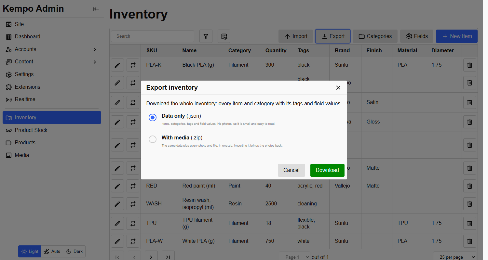
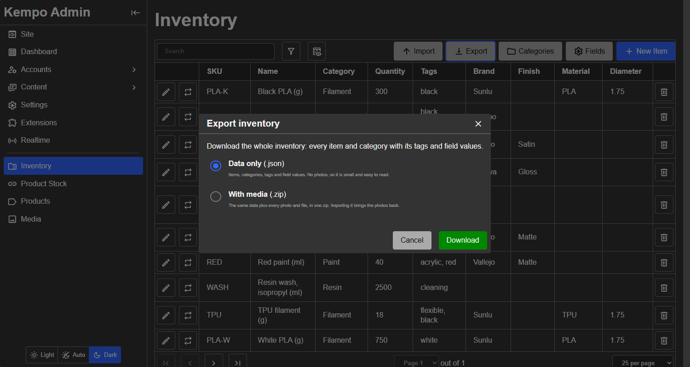
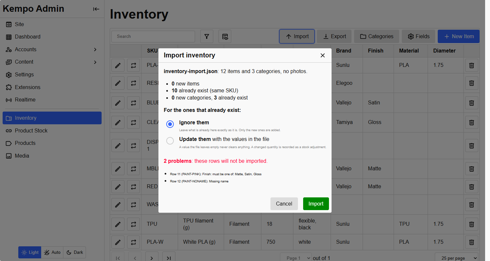
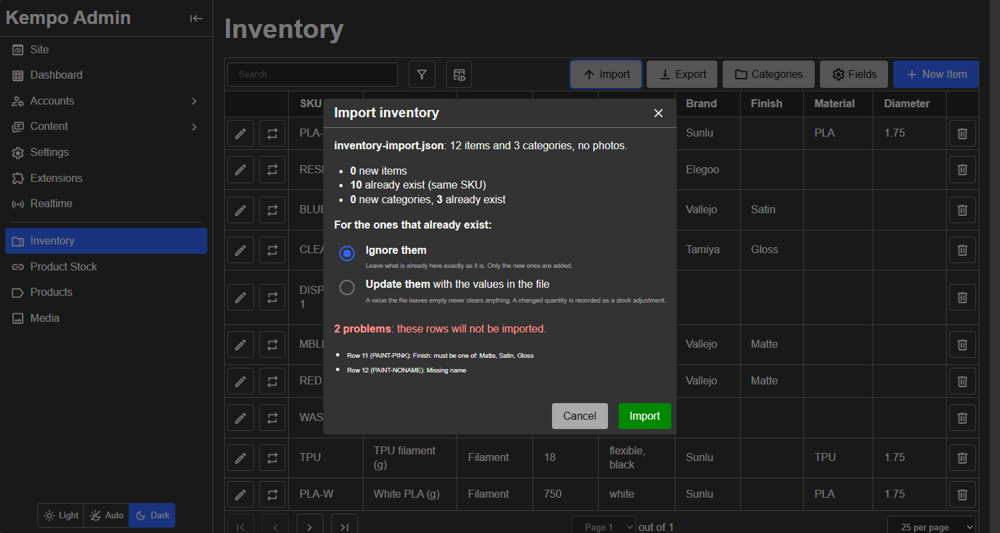

Import and export
Export and Import are on the Inventory page in the admin. Both are limited to the top tier: the kempo-inventory:fields:manage permission, which the kempo-inventory:admin group holds. A manager, a viewer or a signed-out visitor gets a 403 (or 401) and does not see the buttons, because an export carries the whole inventory out, and an import can rewrite and re-stock all of it.
Export


The Export dialog.| File | Holds |
|---|---|
Data only (.json) | Every item (SKU, name, category, quantity, tags, description, field values) and category (description, tags), plus a list of the field definitions for reference. No photos. |
With media (.zip) | The same document as inventory.json, plus every photo and file the items and categories use, under media/. Importing it brings the photos back. |
Import
Import takes either kind of file, or any zip with an inventory.json in the same format. It happens on the server, in two steps:
- Check. The file is uploaded once and checked. You see how many items are new, how many already exist (matched by SKU, and categories by name), what would be ignored, and any rows that cannot be imported and why. Nothing has changed yet.
- Import. For the items that already exist you choose Ignore them (leave what is here exactly as it is, the default) or Update them with the file's values.


The check before importing. Two rows would not be imported: one has a Finish that is not one of the choices, and one has no name.Things worth knowing:
- An empty value in the file never clears anything. A changed quantity is recorded as a stock adjustment with the reason "import", so the history stays honest.
- An import never creates or changes fields. A value only comes across when a field with the same key exists and applies to the item's category. The rest are ignored and counted.
- Rows are independent: one that fails (a missing name, a bad number, a required field with no value) does not stop the others.
- A field linking to another item is exported as that item's SKU and resolved by SKU on import, including to items created in the same import.
- Photos only come from the zip. Each distinct photo is stored once, to the library new uploads normally go to, at its original size.
The import_max_mb setting (250 by default) is the largest file the import accepts.
For scripts
# Download
curl -b cookies.txt "https://example.com/inventory/api/export?format=zip" -o inventory.zip
# Import: check, then apply
curl -b cookies.txt -X POST --data-binary @inventory.zip -H "Content-Type: application/octet-stream" \
"https://example.com/inventory/api/import/preview?name=inventory.zip"
curl -b cookies.txt -X POST -H "Content-Type: application/json" \
-d '{"importId":"...","onMatch":"update"}' https://example.com/inventory/api/import/applyThe server SDK has buildExport, importData, previewImport and applyImport, and the browser SDK has exportUrl, previewImport and applyImport.
How an uploaded file is handled
An import takes a file from outside, so it is handled carefully.
- Permission first. Both import routes check
fields:managebefore they read, parse or store anything from the request. - Staging. The checked upload is kept under a random 128-bit name in the system temp directory, never served, usable only by the person who uploaded it, and deleted when the import runs, when they stage another, or after 30 minutes.
- Zips are opened in memory only. A zip is recognised by its first bytes, not its name. Entries are looked up by the exact names the JSON asks for, never written to disk by their names, and bounded: at most 20,000 files in a zip, 200 MB for one file to inflate to (so a small "zip bomb" cannot exhaust the server), and 5,000 photos and 1 GB of photos per import.
- Only real media. A file is stored only if its extension is a photo, video, audio or PDF type and its first bytes really are that type: a web page renamed
.pngis refused. Everything else is skipped and listed in the result. - Text is data. The text in the JSON is stored as data and escaped wherever it is shown. An import cannot run anything.
kempo-inventory is open source under the MIT license. View it on GitHub, or report a problem.